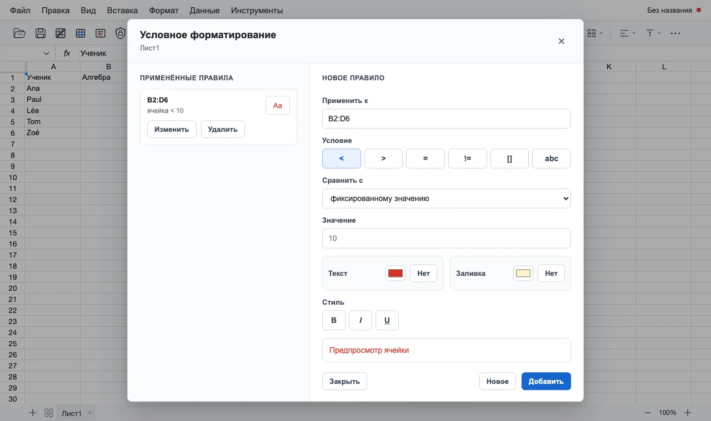

Условное форматирование
Правило меняет вид ячеек диапазона, которые удовлетворяют условию. Оно следует значениям, введённым и вычисленным.
Создание правила
- Выделить диапазон без заголовка.
- или Формат › Условное форматирование.
- Выбрать условие, значение для сравнения, цвета или стиль.
- Добавить.

| Условие | Ячейка |
|---|---|
< | меньше |
> | больше |
= | равна |
!= | не равна |
[] | между двумя значениями, включая границы |
abc | содержит текст, регистр не важен |
С чем сравнивать
| Сравнить с | Пример |
|---|---|
| фиксированному значению | оценки ниже 10 |
| фиксированной ячейке | оценки ниже порога, записанного в F1 |
| столбцу той же строки | в столбце C — значения больше значений столбца B, построчно |
Вид
Текст и Заливка задают цвета, Нет убирает их; B, I, U — полужирный, курсив, подчёркнутый. Нужен хотя бы один цвет или стиль.
Несколько правил
Левый столбец перечисляет правила листа: Изменить, Удалить. Если к ячейке применимо несколько правил, действует последнее в списке, цвет за цветом.
В диапазоне правила цвета текста и фона, заданные ячейкам напрямую, больше не показываются.
Правила сохраняются в файле Excel как условное форматирование Excel.